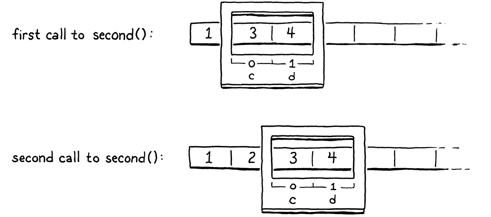
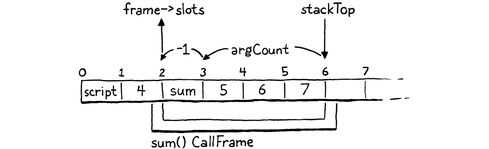

Appels et fonctions
Tout problème en informatique peut être résolu avec un autre niveau d’indirection. Sauf pour le problème de trop de couches d’indirection.
David Wheeler
Ce chapitre est un monstre. J’essaie de briser les fonctionnalités en morceaux de la taille d’une bouchée, mais parfois vous devez avaler le repas entier. Notre tâche suivante est les fonctions. Nous pourrions commencer avec seulement les déclarations de fonction, mais ce n’est pas très utile quand vous ne pouvez pas les appeler. Nous pourrions faire les appels, mais il n’y a rien à appeler. Et tout le support runtime nécessaire dans la VM pour supporter ces deux est peu gratifiant s’il n’est pas accroché à quelque chose que vous pouvez voir. Donc nous allons tout faire. C’est beaucoup, mais nous nous sentirons bien quand nous aurons fini.
24 . 1Objets Fonction
Le changement structurel le plus intéressant dans la VM est autour de la pile. Nous avons déjà une pile pour les variables locales et les temporaires, donc nous y sommes en partie. Mais nous n’avons aucune notion d’une pile d’appels. Avant que nous puissions faire beaucoup de progrès, nous devrons réparer cela. Mais d’abord, écrivons un peu de code. Je me sens toujours mieux une fois que je commence à bouger. Nous ne pouvons pas faire grand-chose sans avoir quelque sorte de représentation pour les fonctions, donc nous commencerons là. De la perspective de la VM, qu’est-ce qu’une fonction ?
Une fonction a un corps qui peut être exécuté, donc cela signifie du bytecode. Nous pourrions compiler le programme entier et toutes ses déclarations de fonction en un gros Chunk monolithique. Chaque fonction aurait un pointeur vers la première instruction de son code à l’intérieur du Chunk.
C’est grosso modo comment la compilation vers du code natif fonctionne où vous finissez avec un blob solide de code machine. Mais pour notre VM à bytecode, nous pouvons faire quelque chose d’un peu plus haut niveau. Je pense qu’un modèle plus propre est de donner à chaque fonction son propre Chunk. Nous voudrons quelques autres métadonnées aussi, donc allons de l’avant et fourrons tout cela dans une structure maintenant.
struct Obj* next; };
add after struct Obj
typedef struct { Obj obj; int arity; Chunk chunk; ObjString* name; } ObjFunction;
struct ObjString {
Les fonctions sont de première classe dans Lox, donc elles ont besoin d’être de vrais objets Lox. Ainsi ObjFunction a le même en-tête Obj que tous les types objets partagent. Le champ arity stocke le nombre de paramètres que la fonction attend. Ensuite, en plus du fragment (chunk), nous stockons le nom de la fonction. Cela sera pratique pour rapporter des erreurs d’exécution lisibles.
C’est la première fois que le module “object” a eu besoin de référencer Chunk, donc nous obtenons une inclusion.
#include "common.h"
#include "chunk.h"
#include "value.h"
Comme nous l’avons fait avec les chaînes, nous définissons quelques accessoires pour rendre les fonctions Lox plus faciles à travailler en C. Sorte d’orientation objet du pauvre. D’abord, nous déclarerons une fonction C pour créer une nouvelle fonction Lox.
uint32_t hash; };
add after struct ObjString
ObjFunction* newFunction();
ObjString* takeString(char* chars, int length);
L’implémentation est par ici :
add after allocateObject()
ObjFunction* newFunction() { ObjFunction* function = ALLOCATE_OBJ(ObjFunction, OBJ_FUNCTION); function->arity = 0; function->name = NULL; initChunk(&function->chunk); return function; }
Nous utilisons notre ami ALLOCATE_OBJ() pour allouer la mémoire et initialiser l’en-tête de l’objet pour que la VM sache quel type d’objet c’est. Au lieu de passer des arguments pour initialiser la fonction comme nous l’avons fait avec ObjString, nous configurons la fonction dans une sorte d’état vide—arité zéro, pas de nom, et pas de code. Cela sera rempli plus tard après que la fonction est créée.
Puisque nous avons un nouveau genre d’objet, nous avons besoin d’un nouveau type d’objet dans l’énumération.
typedef enum {
in enum ObjType
OBJ_FUNCTION,
OBJ_STRING, } ObjType;
Quand nous avons fini avec un objet fonction, nous devons rendre les bits qu’il a empruntés au système d’exploitation.
switch (object->type) {
in freeObject()
case OBJ_FUNCTION: { ObjFunction* function = (ObjFunction*)object; freeChunk(&function->chunk); FREE(ObjFunction, object); break; }
case OBJ_STRING: {
Ce switch case est responsable de libérer l’ObjFunction elle-même aussi bien que toute autre mémoire qu’elle possède. Les fonctions possèdent leur fragment, donc nous appelons la fonction de type destructeur de Chunk.
Lox vous laisse afficher n’importe quel objet, et les fonctions sont des objets de première classe, donc nous devons les gérer aussi.
switch (OBJ_TYPE(value)) {
in printObject()
case OBJ_FUNCTION: printFunction(AS_FUNCTION(value)); break;
case OBJ_STRING:
Cela appelle vers :
add after copyString()
static void printFunction(ObjFunction* function) { printf("<fn %s>", function->name->chars); }
Puisqu’une fonction connaît son nom, elle peut aussi bien le dire.
Finalement, nous avons une couple de macros pour convertir des valeurs en fonctions. D’abord, assurez-vous que votre valeur est réellement une fonction.
#define OBJ_TYPE(value) (AS_OBJ(value)->type)
#define IS_FUNCTION(value) isObjType(value, OBJ_FUNCTION)
#define IS_STRING(value) isObjType(value, OBJ_STRING)
Supposant que cela évalue à vrai, vous pouvez alors sûrement caster la Value vers un pointeur ObjFunction en utilisant ceci :
#define IS_STRING(value) isObjType(value, OBJ_STRING)
#define AS_FUNCTION(value) ((ObjFunction*)AS_OBJ(value))
#define AS_STRING(value) ((ObjString*)AS_OBJ(value))
Avec ça, notre modèle objet sait comment représenter les fonctions. Je me sens chauffé maintenant. Vous êtes prêt pour quelque chose d’un peu plus dur ?
24 . 2Compiler vers des Objets Fonction
En ce moment, notre compilateur suppose qu’il compile toujours vers un seul fragment unique. Avec le code de chaque fonction vivant dans des fragments séparés, cela devient plus complexe. Quand le compilateur atteint une déclaration de fonction, il a besoin d’émettre du code dans le fragment de la fonction lors de la compilation de son corps. À la fin du corps de fonction, le compilateur a besoin de retourner au fragment précédent avec lequel il travaillait.
C’est bien pour le code à l’intérieur des corps de fonction, mais qu’en est-il du code qui ne l’est pas ? Le “niveau supérieur” (top level) d’un programme Lox est aussi du code impératif et nous avons besoin d’un fragment dans lequel compiler cela. Nous pouvons simplifier le compilateur et la VM en plaçant ce code de niveau supérieur à l’intérieur d’une fonction définie automatiquement aussi. De cette façon, le compilateur est toujours à l’intérieur de quelque sorte de corps de fonction, et la VM court toujours du code en invoquant une fonction. C’est comme si le programme entier était enveloppé à l’intérieur d’une fonction implicite main().
Avant que nous arrivions aux fonctions définies par l’utilisateur, alors, faisons la réorganisation pour supporter cette fonction implicite de niveau supérieur. Cela commence avec la structure Compiler. Au lieu de pointer directement vers un Chunk auquel le compilateur écrit, il a au lieu de cela une référence vers l’objet fonction étant construit.
typedef struct {
in struct Compiler
ObjFunction* function; FunctionType type;
Local locals[UINT8_COUNT];
Nous avons aussi une petite énumération FunctionType. Cela laisse le compilateur dire quand il compile du code de niveau supérieur versus le corps d’une fonction. La plupart du compilateur ne se soucie pas de cela—c’est pourquoi c’est une abstraction utile—mais dans un ou deux endroits la distinction est significative. Nous en arriverons à un plus tard.
add after struct Local
typedef enum { TYPE_FUNCTION, TYPE_SCRIPT } FunctionType;
Chaque endroit dans le compilateur qui écrivait au Chunk a maintenant besoin de passer par ce pointeur function. Heureusement, il y a de nombreux chapitres, nous avons encapsulé l’accès au fragment dans la fonction currentChunk(). Nous avons seulement besoin de réparer ça et le reste du compilateur est heureux.
Compiler* current = NULL;
add after variable current
replace 5 lines
static Chunk* currentChunk() { return ¤t->function->chunk; }
static void errorAt(Token* token, const char* message) {
Le fragment courant est toujours le fragment possédé par la fonction que nous sommes au milieu de compiler. Ensuite, nous avons besoin de créer réellement cette fonction. Précédemment, la VM passait un Chunk au compilateur qui le remplissait avec du code. Au lieu de cela, le compilateur créera et renverra une fonction qui contient le code de niveau supérieur compilé—ce qui est tout ce que nous supportons pour l’instant—du programme de l’utilisateur.
24 . 2 . 1Créer des fonctions au moment de la compilation
Nous commençons à enfiler cela à travers compile(), qui est le point d’entrée principal dans le compilateur.
Compiler compiler;
in compile()
replace 2 lines
initCompiler(&compiler, TYPE_SCRIPT);
parser.hadError = false;
Il y a un tas de changements dans comment le compilateur est initialisé. D’abord, nous initialisons les nouveaux champs de Compiler.
function initCompiler()
replace 1 line
static void initCompiler(Compiler* compiler, FunctionType type) { compiler->function = NULL; compiler->type = type;
compiler->localCount = 0;
Ensuite nous allouons un nouvel objet fonction dans lequel compiler.
compiler->scopeDepth = 0;
in initCompiler()
compiler->function = newFunction();
current = compiler;
Créer une ObjFunction dans le compilateur pourrait sembler un peu étrange. Un objet fonction est la représentation runtime d’une fonction, mais ici nous le créons au moment de la compilation. La façon de penser à cela est qu’une fonction est similaire à un littéral chaîne ou nombre. Elle forme un pont entre les mondes de la compilation et de l’exécution. Quand nous arrivons aux déclarations de fonction, celles-ci sont réellement des littéraux—c’est une notation qui produit des valeurs d’un type intégré. Donc le compilateur crée des objets fonction durant la compilation. Ensuite, à l’exécution, ils sont simplement invoqués.
Voici un autre morceau de code étrange :
current = compiler;
in initCompiler()
Local* local = ¤t->locals[current->localCount++]; local->depth = 0; local->name.start = ""; local->name.length = 0;
}
Rappelez-vous que le tableau locals du compilateur garde la trace de quels emplacements de pile sont associés avec quelles variables locales ou temporaires. À partir de maintenant, le compilateur réclame implicitement l’emplacement de pile zéro pour le propre usage interne de la VM. Nous lui donnons un nom vide pour que l’utilisateur ne puisse pas écrire un identifiant qui s’y réfère. J’expliquerai de quoi il s’agit quand cela deviendra utile.
C’est le côté initialisation. Nous avons aussi besoin d’une couple de changements à l’autre bout quand nous avons fini de compiler du code.
function endCompiler()
replace 1 line
static ObjFunction* endCompiler() {
emitReturn();
Précédemment, quand interpret() appelait vers le compilateur, il passait un Chunk pour y écrire. Maintenant que le compilateur crée l’objet fonction lui-même, nous renvoyons cette fonction. Nous l’attrapons depuis le compilateur courant ici :
emitReturn();
in endCompiler()
ObjFunction* function = current->function;
#ifdef DEBUG_PRINT_CODE
Et ensuite la renvoyons à compile() comme ceci :
#endif
in endCompiler()
return function;
}
Maintenant est un bon moment pour faire un autre ajustement dans cette fonction. Plus tôt, nous avions ajouté du code de diagnostic pour faire vider par la VM le bytecode désassemblé pour que nous puissions déboguer le compilateur. Nous devrions réparer cela pour qu’il continue de fonctionner maintenant que le fragment généré est enveloppé dans une fonction.
#ifdef DEBUG_PRINT_CODE
if (!parser.hadError) {
in endCompiler()
replace 1 line
disassembleChunk(currentChunk(), function->name != NULL ? function->name->chars : "<script>");
} #endif
Remarquez la vérification là-dedans pour voir si le nom de la fonction est NULL ? Les fonctions définies par l’utilisateur ont des noms, mais la fonction implicite que nous créons pour le code de niveau supérieur n’en a pas, et nous avons besoin de gérer cela gracieusement même dans notre propre code de diagnostic. En parlant de quoi :
static void printFunction(ObjFunction* function) {
in printFunction()
if (function->name == NULL) { printf("<script>"); return; }
printf("<fn %s>", function->name->chars);
Il n’y a aucun moyen pour un utilisateur d’obtenir une référence à la fonction de niveau supérieur et essayer de l’afficher, mais notre code de diagnostic DEBUG_TRACE_EXECUTION qui affiche la pile entière peut et le fait.
Montant d’un niveau à compile(), nous ajustons sa signature.
#include "vm.h"
function compile()
replace 1 line
ObjFunction* compile(const char* source);
#endif
Au lieu de prendre un fragment, maintenant elle renvoie une fonction. Par ici dans l’implémentation :
function compile()
replace 1 line
ObjFunction* compile(const char* source) {
initScanner(source);
Finalement nous arrivons à du code réel. Nous changeons la toute fin de la fonction pour ceci :
while (!match(TOKEN_EOF)) {
declaration();
}
in compile()
replace 2 lines
ObjFunction* function = endCompiler(); return parser.hadError ? NULL : function;
}
Nous obtenons l’objet fonction depuis le compilateur. S’il n’y avait pas d’erreurs de compilation, nous le renvoyons. Sinon, nous signalons une erreur en renvoyant NULL. De cette façon, la VM n’essaie pas d’exécuter une fonction qui peut contenir du bytecode invalide.
Éventuellement, nous mettrons à jour interpret() pour gérer la nouvelle déclaration de compile(), mais d’abord nous avons quelques autres changements à faire.
24 . 3Cadres d’Appel (Call Frames)
Il est temps pour un grand bond conceptuel. Avant que nous puissions implémenter les déclarations et les appels de fonction, nous devons préparer la VM à les gérer. Il y a deux problèmes principaux dont nous devons nous soucier :
24 . 3 . 1Allouer les variables locales
Le compilateur alloue des emplacements de pile pour les variables locales. Comment cela devrait-il marcher quand l’ensemble des variables locales dans un programme est distribué à travers de multiples fonctions ?
Une option serait de les garder totalement séparées. Chaque fonction obtiendrait son propre ensemble dédié d’emplacements dans la pile de la VM qu’elle posséderait pour toujours, même quand la fonction n’est pas en train d’être appelée. Chaque variable locale dans le programme entier aurait un bout de mémoire dans la VM qu’elle garde pour elle-même.
Croyez-le ou non, les premières implémentations de langages de programmation fonctionnaient de cette façon. Les premiers compilateurs Fortran allouaient statiquement la mémoire pour chaque variable. Le problème évident est que c’est vraiment inefficace. La plupart des fonctions ne sont pas au milieu d’être appelées à n’importe quel point dans le temps, donc s’asseoir sur de la mémoire inutilisée pour elles est du gaspillage.
Le problème plus fondamental, cependant, est la récursivité. Avec la récursivité, vous pouvez être “dans” de multiples appels à la même fonction en même temps. Chacun a besoin de sa propre mémoire pour ses variables locales. Dans jlox, nous avons résolu cela en allouant dynamiquement de la mémoire pour un environnement chaque fois qu’une fonction était appelée ou un bloc entré. Dans clox, nous ne voulons pas ce genre de coût de performance à chaque appel de fonction.
Au lieu de cela, notre solution repose quelque part entre l’allocation statique de Fortran et l’approche dynamique de jlox. La pile de valeurs dans la VM fonctionne sur l’observation que les variables locales et les temporaires se comportent d’une façon dernier-récent premier-sorti (LIFO). Heureusement pour nous, c’est toujours vrai même quand vous ajoutez les appels de fonction dans le mélange. Voici un exemple :
fun first() { var a = 1; second(); var b = 2; } fun second() { var c = 3; var d = 4; } first();
Parcourez le programme et regardez quelles variables sont en mémoire à chaque point dans le temps :

Comme l’exécution coule à travers les deux appels, chaque variable locale obéit au principe que toute variable déclarée après elle sera jetée avant que la première variable ait besoin de l’être. C’est vrai même à travers les appels. Nous savons que nous aurons fini avec c et d avant que nous ayons fini avec a. Il semble que nous devrions être capables d’allouer les variables locales sur la pile de valeurs de la VM.
Idéalement, nous déterminons toujours où sur la pile chaque variable ira au moment de la compilation. Cela garde les instructions bytecode pour travailler avec les variables simples et rapides. Dans l’exemple ci-dessus, nous pourrions imaginer faire ainsi d’une manière directe, mais cela ne s’arrange pas toujours. Considérez :
fun first() { var a = 1; second(); var b = 2; second(); } fun second() { var c = 3; var d = 4; } first();
Dans le premier appel à second(), c et d iraient dans les emplacements 1 et 2. Mais dans le second appel, nous avons besoin d’avoir fait de la place pour b, donc c et d ont besoin d’être dans les emplacements 2 et 3. Ainsi le compilateur ne peut pas épingler un emplacement exact pour chaque variable locale à travers les appels de fonction. Mais au sein d’une fonction donnée, les emplacements relatifs de chaque variable locale sont fixes. La variable d est toujours dans l’emplacement juste après c. C’est l’intuition clé.
Quand une fonction est appelée, nous ne savons pas où le sommet de la pile sera parce qu’elle peut être appelée depuis différents contextes. Mais, peu importe où ce sommet se trouve être, nous savons où toutes les variables locales de la fonction seront relativement à ce point de départ. Donc, comme beaucoup de problèmes, nous résolvons notre problème d’allocation avec un niveau d’indirection.
Au début de chaque appel de fonction, la VM enregistre l’emplacement du premier emplacement où les propres locales de cette fonction commencent. Les instructions pour travailler avec les variables locales y accèdent par un index d’emplacement relatif à cela, au lieu de relatif au bas de la pile comme elles le font aujourd’hui. À la compilation, nous calculons ces emplacements relatifs. À l’exécution, nous convertissons cet emplacement relatif en un index de pile absolu en ajoutant l’emplacement de départ de l’appel de fonction.
C’est comme si la fonction obtenait une “fenêtre” ou un “cadre” au sein de la plus grande pile où elle peut stocker ses locales. La position du cadre d’appel (call frame) est déterminée à l’exécution, mais au sein et relativement à cette région, nous savons où trouver les choses.
Le nom historique pour cet emplacement enregistré où les locales de la fonction commencent est un pointeur de cadre parce qu’il pointe vers le début du cadre d’appel de la fonction. Parfois vous entendez pointeur de base, parce qu’il pointe vers l’emplacement de pile de base au-dessus duquel toutes les variables de la fonction vivent.
C’est le premier morceau de données que nous avons besoin de suivre. Chaque fois que nous appelons une fonction, la VM détermine le premier emplacement de pile où les variables de cette fonction commencent.
24 . 3 . 2Adresses de retour
En ce moment, la VM travaille son chemin à travers le flux d’instruction en incrémentant le champ ip. Le seul comportement intéressant est autour des instructions de contrôle de flux qui décalent l’ip de montants plus grands. Appeler une fonction est assez direct—réglez simplement ip pour pointer vers la première instruction dans le fragment de cette fonction. Mais qu’en est-il quand la fonction est finie ?
La VM a besoin de retourner au fragment où la fonction a été appelée et reprendre l’exécution à l’instruction immédiatement après l’appel. Ainsi, pour chaque appel de fonction, nous avons besoin de suivre où nous sautons en retour quand l’appel se complète. Ceci est appelé une adresse de retour parce que c’est l’adresse de l’instruction à laquelle la VM retourne après l’appel.
Encore, grâce à la récursivité, il peut y avoir de multiples adresses de retour pour une seule fonction, donc ceci est une propriété de chaque invocation et non de la fonction elle-même.
24 . 3 . 3La pile d’appels
Donc pour chaque invocation de fonction vivante—chaque appel qui n’a pas retourné encore—nous avons besoin de suivre où sur la pile les locales de cette fonction commencent, et où l’appelant devrait reprendre. Nous mettrons cela, avec quelques autres trucs, dans une nouvelle structure.
#define STACK_MAX 256
typedef struct { ObjFunction* function; uint8_t* ip; Value* slots; } CallFrame;
typedef struct {
Une CallFrame représente un seul appel de fonction en cours. Le champ slots pointe dans la pile de valeurs de la VM au premier emplacement que cette fonction peut utiliser. Je lui ai donné un nom pluriel parce que—grâce au truc bizarre de C “les pointeurs sont en quelque sorte des tableaux”—nous le traiterons comme un tableau.
L’implémentation des adresses de retour est un peu différente de ce que j’ai décrit ci-dessus. Au lieu de stocker l’adresse de retour dans le cadre de l’appelé, l’appelant stocke son propre ip. Quand nous retournons d’une fonction, la VM sautera à l’ip de la CallFrame de l’appelant et reprendra de là.
J’ai aussi fourré un pointeur vers la fonction étant appelée ici. Nous utiliserons cela pour rechercher des constantes et pour quelques autres choses.
Chaque fois qu’une fonction est appelée, nous créons une de ces structures. Nous pourrions les allouer dynamiquement sur le tas, mais c’est lent. Les appels de fonction sont une opération centrale, donc ils ont besoin d’être aussi rapides que possible. Heureusement, nous pouvons faire la même observation que nous avons faite pour les variables : les appels de fonction ont une sémantique de pile. Si first() appelle second(), l’appel à second() se complétera avant que first() ne le fasse.
Donc là-bas dans la VM, nous créons un tableau de ces structures CallFrame à l’avance et le traitons comme une pile, comme nous le faisons avec le tableau de valeurs.
typedef struct {
in struct VM
replace 2 lines
CallFrame frames[FRAMES_MAX]; int frameCount;
Value stack[STACK_MAX];
Ce tableau remplace les champs chunk et ip que nous avions l’habitude d’avoir directement dans la VM. Maintenant chaque CallFrame a son propre ip et son propre pointeur vers l’ObjFunction qu’elle exécute. De là, nous pouvons aller au fragment de la fonction.
Le nouveau champ frameCount dans la VM stocke la hauteur courante de la pile CallFrame—le nombre d’appels de fonction en cours. Pour garder clox simple, la capacité du tableau est fixe. Cela signifie, comme dans beaucoup d’implémentations de langage, qu’il existe une profondeur d’appel maximale que nous pouvons gérer. Pour clox, c’est défini ici :
#include "value.h"
replace 1 line
#define FRAMES_MAX 64 #define STACK_MAX (FRAMES_MAX * UINT8_COUNT)
typedef struct {
Nous redéfinissons aussi la taille de la pile de valeurs en termes de cela pour nous assurer que nous avons plein d’emplacements de pile même dans des arbres d’appel très profonds. Quand la VM démarre, la pile CallFrame est vide.
vm.stackTop = vm.stack;
in resetStack()
vm.frameCount = 0;
}
L’en-tête “vm.h” a besoin d’accéder à ObjFunction, donc nous ajoutons une inclusion.
#define clox_vm_h
replace 1 line
#include "object.h"
#include "table.h"
Maintenant nous sommes prêts à bouger vers le fichier d’implémentation de la VM. Nous avons du sale boulot devant nous. Nous avons déplacé le ip hors de la structure VM et dans CallFrame. Nous avons besoin de réparer chaque ligne de code dans la VM qui touche à ip pour gérer cela. Aussi, les instructions qui accèdent aux variables locales par emplacement de pile ont besoin d’être mises à jour pour le faire relativement au champ slots de la CallFrame courante.
Nous commencerons au sommet et labourerons à travers.
static InterpretResult run() {
in run()
replace 4 lines
CallFrame* frame = &vm.frames[vm.frameCount - 1]; #define READ_BYTE() (*frame->ip++) #define READ_SHORT() \ (frame->ip += 2, \ (uint16_t)((frame->ip[-2] << 8) | frame->ip[-1])) #define READ_CONSTANT() \ (frame->function->chunk.constants.values[READ_BYTE()])
#define READ_STRING() AS_STRING(READ_CONSTANT())
D’abord, nous stockons la CallFrame la plus haute courante dans une variable locale à l’intérieur de la fonction principale d’exécution bytecode. Ensuite nous remplaçons les macros d’accès au bytecode par des versions qui accèdent à ip à travers cette variable.
Maintenant sur chaque instruction qui a besoin d’un peu d’amour et de soin.
case OP_GET_LOCAL: {
uint8_t slot = READ_BYTE();
in run()
replace 1 line
push(frame->slots[slot]);
break;
Précédemment, OP_GET_LOCAL lisait l’emplacement local donné directement depuis le tableau de pile de la VM, ce qui signifiait qu’il indexait l’emplacement commençant depuis le bas de la pile. Maintenant, il accède au tableau slots du cadre courant, ce qui signifie qu’il accède à l’emplacement numéroté donné relativement au début de ce cadre.
Régler une variable locale fonctionne de la même façon.
case OP_SET_LOCAL: {
uint8_t slot = READ_BYTE();
in run()
replace 1 line
frame->slots[slot] = peek(0);
break;
Les instructions de saut avaient l’habitude de modifier le champ ip de la VM. Maintenant, elles font la même chose pour l’ip du cadre courant.
case OP_JUMP: {
uint16_t offset = READ_SHORT();
in run()
replace 1 line
frame->ip += offset;
break;
Même chose avec le saut conditionnel :
case OP_JUMP_IF_FALSE: {
uint16_t offset = READ_SHORT();
in run()
replace 1 line
if (isFalsey(peek(0))) frame->ip += offset;
break;
Et notre instruction de boucle sautant en arrière :
case OP_LOOP: {
uint16_t offset = READ_SHORT();
in run()
replace 1 line
frame->ip -= offset;
break;
Nous avons du code de diagnostic qui imprime chaque instruction comme elle s’exécute pour nous aider à déboguer notre VM. Cela a besoin de fonctionner avec la nouvelle structure aussi.
printf("\n");
in run()
replace 2 lines
disassembleInstruction(&frame->function->chunk, (int)(frame->ip - frame->function->chunk.code));
#endif
Au lieu de passer les champs chunk et ip de la VM, maintenant nous lisons depuis la CallFrame courante.
Vous savez, ce n’était pas trop mal, en fait. La plupart des instructions utilisent juste les macros donc n’ont pas eu besoin d’être touchées. Ensuite, nous sautons d’un niveau au code qui appelle run().
InterpretResult interpret(const char* source) {
in interpret()
replace 10 lines
ObjFunction* function = compile(source); if (function == NULL) return INTERPRET_COMPILE_ERROR; push(OBJ_VAL(function)); CallFrame* frame = &vm.frames[vm.frameCount++]; frame->function = function; frame->ip = function->chunk.code; frame->slots = vm.stack;
InterpretResult result = run();
Nous arrivons finalement à brancher nos changements de compilateur précédents aux changements back-end que nous venons de faire. D’abord, nous passons le code source au compilateur. Il nous renvoie une nouvelle ObjFunction contenant le code de niveau supérieur compilé. Si nous obtenons NULL en retour, cela signifie qu’il y a eu quelque erreur au moment de la compilation que le compilateur a déjà rapportée. Dans ce cas, nous abandonnons puisque nous ne pouvons rien exécuter.
Sinon, nous stockons la fonction sur la pile et préparons une CallFrame initiale pour exécuter son code. Maintenant vous pouvez voir pourquoi le compilateur met de côté l’emplacement de pile zéro—cela stocke la fonction étant appelée. Dans la nouvelle CallFrame, nous pointons vers la fonction, initialisons son ip pour pointer vers le début du bytecode de la fonction, et configurons sa fenêtre de pile pour commencer tout au bas de la pile de valeurs de la VM.
Cela prépare l’interpréteur à commencer à exécuter du code. Après avoir fini, la VM avait l’habitude de libérer le fragment codé en dur. Maintenant que l’ObjFunction possède ce code, nous n’avons plus besoin de faire cela, donc la fin de interpret() est simplement ceci :
frame->slots = vm.stack;
in interpret()
replace 4 lines
return run();
}
Le dernier morceau de code se référant aux vieux champs de la VM est runtimeError(). Nous revisiterons cela plus tard dans le chapitre, mais pour l’instant changeons-le pour ceci :
fputs("\n", stderr);
in runtimeError()
replace 2 lines
CallFrame* frame = &vm.frames[vm.frameCount - 1]; size_t instruction = frame->ip - frame->function->chunk.code - 1; int line = frame->function->chunk.lines[instruction];
fprintf(stderr, "[line %d] in script\n", line);
Au lieu de lire le fragment et l’ip directement depuis la VM, il tire ceux-ci depuis la CallFrame la plus haute sur la pile. Cela devrait faire fonctionner la fonction à nouveau et se comporter comme elle le faisait avant.
Supposant que nous avons fait tout cela correctement, nous avons ramené clox à un état exécutable. Démarrez-le et il fait . . . exactement ce qu’il faisait avant. Nous n’avons ajouté aucune nouvelle fonctionnalité encore, donc c’est un peu une déception. Mais toute l’infrastructure est là et prête pour nous maintenant. Tirons-en avantage.
24 . 4Déclarations de Fonction
Avant que nous puissions faire des expressions d’appel, nous avons besoin de quelque chose à appeler, donc nous ferons les déclarations de fonction d’abord. Le fun commence avec un mot-clé.
static void declaration() {
in declaration()
replace 1 line
if (match(TOKEN_FUN)) { funDeclaration(); } else if (match(TOKEN_VAR)) {
varDeclaration();
Cela passe le contrôle ici :
add after block()
static void funDeclaration() { uint8_t global = parseVariable("Expect function name."); markInitialized(); function(TYPE_FUNCTION); defineVariable(global); }
Les fonctions sont des valeurs de première classe, et une déclaration de fonction crée et stocke simplement une dans une variable nouvellement déclarée. Donc nous analysons le nom juste comme n’importe quelle autre déclaration de variable. Une déclaration de fonction au niveau supérieur liera la fonction à une variable globale. À l’intérieur d’un bloc ou autre fonction, une déclaration de fonction crée une variable locale.
Dans un chapitre précédent, j’ai expliqué comment les variables sont définies en deux étapes. Cela assure que vous ne pouvez pas accéder à la valeur d’une variable à l’intérieur de l’initialisateur de la variable elle-même. Cela serait mauvais parce que la variable n’a pas de valeur encore.
Les fonctions ne souffrent pas de ce problème. Il est sûr pour une fonction de se référer à son propre nom à l’intérieur de son corps. Vous ne pouvez pas appeler la fonction et exécuter le corps jusqu’à ce qu’elle soit pleinement définie, donc vous ne verrez jamais la variable dans un état non initialisé. Pratiquement parlant, il est utile de permettre ceci afin de supporter les fonctions locales récursives.
Pour faire fonctionner cela, nous marquons la variable de la déclaration de fonction “initialisée” aussitôt que nous compilons le nom, avant que nous compilions le corps. De cette façon le nom peut être référencé à l’intérieur du corps sans générer une erreur.
Nous avons besoin d’une vérification, cependant.
static void markInitialized() {
in markInitialized()
if (current->scopeDepth == 0) return;
current->locals[current->localCount - 1].depth =
Avant, nous appelions markInitialized() seulement quand nous savions déjà que nous étions dans une portée locale. Maintenant, une déclaration de fonction de niveau supérieur appellera aussi cette fonction. Quand cela arrive, il n’y a pas de variable locale à marquer initialisée—la fonction est liée à une variable globale.
Ensuite, nous compilons la fonction elle-même—sa liste de paramètres et son corps de bloc. Pour cela, nous utilisons une fonction aide séparée. Cette aide génère du code qui laisse l’objet fonction résultant au sommet de la pile. Après cela, nous appelons defineVariable() pour stocker cette fonction en retour dans la variable que nous avons déclarée pour elle.
J’ai séparé le code pour compiler les paramètres et le corps parce que nous le réutiliserons plus tard pour analyser les déclarations de méthode à l’intérieur des classes. Construisons-le incrémentalement, commençant avec ceci :
add after block()
static void function(FunctionType type) { Compiler compiler; initCompiler(&compiler, type); beginScope(); consume(TOKEN_LEFT_PAREN, "Expect '(' after function name."); consume(TOKEN_RIGHT_PAREN, "Expect ')' after parameters."); consume(TOKEN_LEFT_BRACE, "Expect '{' before function body."); block(); ObjFunction* function = endCompiler(); emitBytes(OP_CONSTANT, makeConstant(OBJ_VAL(function))); }
Pour l’instant, nous ne nous soucierons pas des paramètres. Nous analysons une paire vide de parenthèses suivies par le corps. Le corps commence avec une accolade gauche, que nous analysons ici. Ensuite nous appelons notre fonction block() existante, qui sait comment compiler le reste d’un bloc incluant l’accolade fermante.
24 . 4 . 1Une pile de compilateurs
Les parties intéressantes sont les trucs de compilateur au sommet et au bas. La structure Compiler stocke des données comme quels emplacements sont possédés par quelles variables locales, combien de blocs d’imbrication nous sommes actuellement dedans, etc. Tout cela est spécifique à une fonction unique. Mais maintenant le front end a besoin de gérer la compilation de multiples fonctions imbriquées les unes dans les autres.
Le truc pour gérer cela est de créer un Compiler séparé pour chaque fonction étant compilée. Quand nous commençons à compiler une déclaration de fonction, nous créons un nouveau Compiler sur la pile C et l’initialisons. initCompiler() règle ce Compiler pour être le courant. Ensuite, comme nous compilons le corps, toutes les fonctions qui émettent du bytecode écrivent au fragment possédé par la fonction du nouveau Compiler.
Après que nous atteignons la fin du corps de bloc de la fonction, nous appelons endCompiler(). Cela produit l’objet fonction nouvellement compilé, que nous stockons comme une constante dans la table des constantes de la fonction enveloppante. Mais, attendez, comment revenons-nous à la fonction enveloppante ? Nous l’avons perdue quand initCompiler() a écrasé le pointeur de compilateur courant.
Nous réparons cela en traitant la série de structures Compiler imbriquées comme une pile. Contrairement aux piles Value et CallFrame dans la VM, nous n’utiliserons pas un tableau. Au lieu de cela, nous utilisons une liste chaînée. Chaque Compiler pointe en arrière vers le Compiler pour la fonction qui l’entoure, tout le chemin de retour au Compiler racine pour le code de niveau supérieur.
} FunctionType;
add after enum FunctionType
replace 1 line
typedef struct Compiler { struct Compiler* enclosing;
ObjFunction* function;
À l’intérieur de la structure Compiler, nous ne pouvons pas référencer le typedef Compiler puisque cette déclaration n’a pas fini encore. Au lieu de cela, nous donnons un nom à la structure elle-même et utilisons cela pour le type du champ. Le C est bizarre.
Lors de l’initialisation d’un nouveau Compiler, nous capturons celui sur-le-point-de-ne-plus-être-courant dans ce pointeur.
static void initCompiler(Compiler* compiler, FunctionType type) {
in initCompiler()
compiler->enclosing = current;
compiler->function = NULL;
Ensuite quand un Compiler finit, il se dépile lui-même de la pile en restaurant le compilateur précédent pour être le nouveau courant.
#endif
in endCompiler()
current = current->enclosing;
return function;
Notez que nous n’avons même pas besoin d’allouer dynamiquement les structures Compiler. Chacune est stockée comme une variable locale dans la pile C—soit dans compile() ou function(). La liste chaînée de Compilers s’enfile à travers la pile C. La raison pour laquelle nous pouvons obtenir un nombre illimité d’entre eux est parce que notre compilateur utilise la descente récursive, donc function() finit par s’appeler elle-même récursivement quand vous avez des déclarations de fonction imbriquées.
24 . 4 . 2Paramètres de fonction
Les fonctions ne sont pas très utiles si vous ne pouvez pas leur passer des arguments, donc faisons les paramètres ensuite.
consume(TOKEN_LEFT_PAREN, "Expect '(' after function name.");
in function()
if (!check(TOKEN_RIGHT_PAREN)) { do { current->function->arity++; if (current->function->arity > 255) { errorAtCurrent("Can't have more than 255 parameters."); } uint8_t constant = parseVariable("Expect parameter name."); defineVariable(constant); } while (match(TOKEN_COMMA)); }
consume(TOKEN_RIGHT_PAREN, "Expect ')' after parameters.");
Sémantiquement, un paramètre est simplement une variable locale déclarée dans la portée lexicale la plus extérieure du corps de la fonction. Nous arrivons à utiliser le support existant du compilateur pour déclarer des variables locales nommées pour analyser et compiler les paramètres. Contrairement aux variables locales, qui ont des initialisateurs, il n’y a pas de code ici pour initialiser la valeur du paramètre. Nous verrons comment ils sont initialisés plus tard quand nous ferons le passage d’arguments dans les appels de fonction.
Pendant que nous y sommes, nous notons l’arité de la fonction en comptant combien de paramètres nous analysons. L’autre morceau de métadonnée que nous stockons avec une fonction est son nom. Lors de la compilation d’une déclaration de fonction, nous appelons initCompiler() juste après que nous analysons le nom de la fonction. Cela signifie que nous pouvons attraper le nom juste là depuis le jeton précédent.
current = compiler;
in initCompiler()
if (type != TYPE_SCRIPT) { current->function->name = copyString(parser.previous.start, parser.previous.length); }
Local* local = ¤t->locals[current->localCount++];
Notez que nous faisons attention de créer une copie de la chaîne de nom. Rappelez-vous, le lexème pointe directement dans la chaîne de code source originale. Cette chaîne peut être libérée une fois que le code est fini de compiler. L’objet fonction que nous créons dans le compilateur survit au compilateur et persiste jusqu’à l’exécution. Donc il a besoin de sa propre chaîne de nom allouée sur le tas qu’il peut garder autour.
Radical. Maintenant nous pouvons compiler les déclarations de fonction, comme ceci :
fun areWeHavingItYet() { print "Yes we are!"; } print areWeHavingItYet;
Nous ne pouvons juste rien faire d’utile avec elles.
24 . 5Appels de Fonction
À la fin de cette section, nous commencerons à voir quelque comportement intéressant. L’étape suivante est d’appeler les fonctions. Nous ne pensons pas habituellement à cela de cette façon, mais une expression d’appel de fonction est une sorte d’opérateur ( infixe. Vous avez une expression de haute priorité sur la gauche pour la chose étant appelée—habituellement juste un identifiant simple. Ensuite la ( au milieu, suivie par les expressions arguments séparées par des virgules, et une ) finale pour envelopper le tout à la fin.
Cette perspective grammaticale étrange explique comment accrocher la syntaxe dans notre table d’analyse.
ParseRule rules[] = {
add after unary()
replace 1 line
[TOKEN_LEFT_PAREN] = {grouping, call, PREC_CALL},
[TOKEN_RIGHT_PAREN] = {NULL, NULL, PREC_NONE},
Quand l’analyseur rencontre une parenthèse gauche suivant une expression, il répartit vers une nouvelle fonction d’analyseur.
add after binary()
static void call(bool canAssign) { uint8_t argCount = argumentList(); emitBytes(OP_CALL, argCount); }
Nous avons déjà consommé le jeton (, donc ensuite nous compilons les arguments en utilisant une aide argumentList() séparée. Cette fonction renvoie le nombre d’arguments qu’elle a compilés. Chaque expression argument génère du code qui laisse sa valeur sur la pile en préparation pour l’appel. Après cela, nous émettons une nouvelle instruction OP_CALL pour invoquer la fonction, utilisant le compte d’arguments comme un opérande.
Nous compilons les arguments en utilisant cette amie :
add after defineVariable()
static uint8_t argumentList() { uint8_t argCount = 0; if (!check(TOKEN_RIGHT_PAREN)) { do { expression(); argCount++; } while (match(TOKEN_COMMA)); } consume(TOKEN_RIGHT_PAREN, "Expect ')' after arguments."); return argCount; }
Ce code devrait sembler familier de jlox. Nous mâchons à travers les arguments tant que nous trouvons des virgules après chaque expression. Une fois que nous sommes à court, nous consommons la parenthèse fermante finale et nous avons fini.
Eh bien, presque. De retour dans jlox, nous avions ajouté une vérification à la compilation que vous ne passez pas plus de 255 arguments à un appel. À l’époque, j’ai dit que c’était parce que clox aurait besoin d’une limite similaire. Maintenant vous pouvez voir pourquoi—puisque nous fourrons le compte d’arguments dans le bytecode comme un opérande d’un seul octet, nous ne pouvons aller que jusqu’à 255. Nous avons besoin de vérifier cela dans ce compilateur aussi.
expression();
in argumentList()
if (argCount == 255) { error("Can't have more than 255 arguments."); }
argCount++;
C’est le front end. Sautons vers le back end, avec un arrêt rapide au milieu pour déclarer la nouvelle instruction.
OP_LOOP,
in enum OpCode
OP_CALL,
OP_RETURN,
24 . 5 . 1Lier les arguments aux paramètres
Avant que nous n’arrivions à l’implémentation, nous devrions penser à ce à quoi la pile ressemble au point d’un appel et ce que nous devons faire à partir de là. Quand nous atteignons l’instruction d’appel, nous avons déjà exécuté l’expression pour la fonction étant appelée, suivie par ses arguments. Disons que notre programme ressemble à ceci :
fun sum(a, b, c) { return a + b + c; } print 4 + sum(5, 6, 7);
Si nous mettons la VM en pause juste sur l’instruction OP_CALL pour cet appel à sum(), la pile ressemble à ceci :

Imaginez ceci de la perspective de sum() elle-même. Quand le compilateur a compilé sum(), il a automatiquement alloué l’emplacement zéro. Ensuite, après cela, il a alloué des emplacements locaux pour les paramètres a, b, et c, dans l’ordre. Pour effectuer un appel à sum(), nous avons besoin d’une CallFrame initialisée avec la fonction étant appelée et une région d’emplacements de pile qu’elle peut utiliser. Ensuite nous avons besoin de collecter les arguments passés à la fonction et les obtenir dans les emplacements correspondants pour les paramètres.
Quand la VM commence à exécuter le corps de sum(), nous voulons que sa fenêtre de pile ressemble à ceci :

Remarquez-vous comment les emplacements d’argument que l’appelant configure et les emplacements de paramètre dont l’appelé a besoin sont tous deux dans exactement le bon ordre ? Quelle commodité ! Ce n’est pas une coïncidence. Quand j’ai parlé de chaque CallFrame ayant sa propre fenêtre dans la pile, je n’ai jamais dit que ces fenêtres doivent être disjointes. Il n’y a rien qui nous empêche de les chevaucher, comme ceci :

Le sommet de la pile de l’appelant contient la fonction étant appelée suivie par les arguments dans l’ordre. Nous savons que l’appelant n’a pas d’autres emplacements au-dessus de ceux-ci en usage parce que tous les temporaires nécessaires lors de l’évaluation des expressions arguments ont été jetés maintenant. Le bas de la pile de l’appelé chevauche de sorte que les emplacements paramètre s’alignent exactement avec où les valeurs argument vivent déjà.
Cela signifie que nous n’avons pas besoin de faire aucun travail pour “lier un argument à un paramètre”. Il n’y a pas de copie de valeurs entre des emplacements ou à travers des environnements. Les arguments sont déjà exactement où ils ont besoin d’être. Il est dur de battre cela pour la performance.
Temps d’implémenter l’instruction d’appel.
}
in run()
case OP_CALL: { int argCount = READ_BYTE(); if (!callValue(peek(argCount), argCount)) { return INTERPRET_RUNTIME_ERROR; } break; }
case OP_RETURN: {
Nous avons besoin de connaître la fonction étant appelée et le nombre d’arguments passés à elle. Nous obtenons ce dernier du opérande de l’instruction. Cela nous dit aussi où trouver la fonction sur la pile en comptant passé les emplacements argument depuis le sommet de la pile. Nous remettons ces données à une fonction callValue() séparée. Si celle-ci renvoie false, cela signifie que l’appel a causé quelque sorte d’erreur d’exécution. Quand cela arrive, nous avortons l’interpréteur.
Si callValue() a du succès, il y aura un nouveau cadre sur la pile CallFrame pour la fonction appelée. La fonction run() a son propre pointeur mis en cache vers le cadre courant, donc nous avons besoin de mettre à jour cela.
return INTERPRET_RUNTIME_ERROR;
}
in run()
frame = &vm.frames[vm.frameCount - 1];
break;
Puisque la boucle de répartition bytecode lit depuis cette variable frame, quand la VM va exécuter l’instruction suivante, elle lira l’ip depuis la CallFrame de la fonction nouvellement appelée et sautera vers son code. Le travail pour exécuter cet appel commence ici :
add after peek()
static bool callValue(Value callee, int argCount) { if (IS_OBJ(callee)) { switch (OBJ_TYPE(callee)) { case OBJ_FUNCTION: return call(AS_FUNCTION(callee), argCount); default: break; // Non-callable object type. } } runtimeError("Can only call functions and classes."); return false; }
Il y a plus qui se passe ici que juste initialiser une nouvelle CallFrame. Parce que Lox est typé dynamiquement, il n’y a rien pour empêcher un utilisateur d’écrire du mauvais code comme :
var notAFunction = 123; notAFunction();
Si cela arrive, le runtime a besoin de rapporter sûrement une erreur et s’arrêter. Donc la première chose que nous faisons est de vérifier le type de la valeur que nous essayons d’appeler. Si ce n’est pas une fonction, nous sortons en erreur. Sinon, l’appel réel arrive ici :
add after peek()
static bool call(ObjFunction* function, int argCount) { CallFrame* frame = &vm.frames[vm.frameCount++]; frame->function = function; frame->ip = function->chunk.code; frame->slots = vm.stackTop - argCount - 1; return true; }
Ceci initialise simplement la prochaine CallFrame sur la pile. Cela stocke un pointeur vers la fonction étant appelée et pointe l’ip du cadre vers le début du bytecode de la fonction. Finalement, cela configure le pointeur slots pour donner au cadre sa fenêtre dans la pile. L’arithmétique là assure que les arguments déjà sur la pile s’alignent avec les paramètres de la fonction :
slots à partir de stackTop et argCount.” />
Le petit - 1 rigolo est pour prendre en compte l’emplacement de pile zéro que le compilateur a mis de côté pour quand nous ajouterons les méthodes plus tard. Les paramètres commencent à l’emplacement un donc nous faisons commencer la fenêtre un emplacement plus tôt pour les aligner avec les arguments.
Avant que nous passions à autre chose, ajoutons la nouvelle instruction à notre désassembleur.
return jumpInstruction("OP_LOOP", -1, chunk, offset);
in disassembleInstruction()
case OP_CALL: return byteInstruction("OP_CALL", chunk, offset);
case OP_RETURN:
Et un autre petit voyage rapide. Maintenant que nous avons une fonction pratique pour initier une CallFrame, nous pouvons aussi bien l’utiliser pour configurer le premier cadre pour exécuter le code de niveau supérieur.
push(OBJ_VAL(function));
in interpret()
replace 4 lines
call(function, 0);
return run();
OK, maintenant retour aux appels . . .
24 . 5 . 2Vérification d’erreur à l’exécution
Les fenêtres de pile chevauchantes fonctionnent basées sur l’hypothèse qu’un appel passe exactement un argument pour chacun des paramètres de la fonction. Mais, encore, parce que Lox n’est pas typé statiquement, un utilisateur insensé pourrait passer trop ou trop peu d’arguments. Dans Lox, nous avons défini cela comme étant une erreur d’exécution, que nous rapportons comme ceci :
static bool call(ObjFunction* function, int argCount) {
in call()
if (argCount != function->arity) { runtimeError("Expected %d arguments but got %d.", function->arity, argCount); return false; }
CallFrame* frame = &vm.frames[vm.frameCount++];
Assez direct. C’est pourquoi nous stockons l’arité de chaque fonction à l’intérieur de l’ObjFunction pour elle.
Il y a une autre erreur que nous devons rapporter qui a moins à voir avec la bêtise de l’utilisateur qu’avec la nôtre. Parce que le tableau CallFrame a une taille fixe, nous devons nous assurer qu’une chaîne d’appels profonde ne le déborde pas.
}
in call()
if (vm.frameCount == FRAMES_MAX) { runtimeError("Stack overflow."); return false; }
CallFrame* frame = &vm.frames[vm.frameCount++];
En pratique, si un programme arrive n’importe où près de cette limite, il y a très probablement un bug dans quelque code récursif emballé.
24 . 5 . 3Afficher les traces de pile
Pendant que nous sommes sur le sujet des erreurs d’exécution, passons un peu de temps à les rendre plus utiles. S’arrêter sur une erreur d’exécution est important pour empêcher la VM de planter et brûler d’une manière mal définie. Mais simplement avorter n’aide pas l’utilisateur à réparer son code qui a causé cette erreur.
L’outil classique pour aider à déboguer les échecs d’exécution est une trace de pile—une impression de chaque fonction qui était encore en train d’exécuter quand le programme est mort, et où l’exécution était au point où il est mort. Maintenant que nous avons une pile d’appels et que nous avons commodément stocké le nom de chaque fonction, nous pouvons montrer cette pile entière quand une erreur d’exécution perturbe l’harmonie de l’existence de l’utilisateur. Cela ressemble à ceci :
fputs("\n", stderr);
in runtimeError()
replace 4 lines
for (int i = vm.frameCount - 1; i >= 0; i--) { CallFrame* frame = &vm.frames[i]; ObjFunction* function = frame->function; size_t instruction = frame->ip - function->chunk.code - 1; fprintf(stderr, "[line %d] in ", function->chunk.lines[instruction]); if (function->name == NULL) { fprintf(stderr, "script\n"); } else { fprintf(stderr, "%s()\n", function->name->chars); } }
resetStack(); }
Après avoir affiché le message d’erreur lui-même, nous marchons la pile d’appels du haut (la fonction la plus récemment appelée) au bas (le code de niveau supérieur). Pour chaque cadre, nous trouvons le numéro de ligne qui correspond à l’ip courant à l’intérieur de la fonction de ce cadre. Ensuite nous affichons ce numéro de ligne avec le nom de la fonction.
Par exemple, si vous exécutez ce programme cassé :
fun a() { b(); } fun b() { c(); } fun c() { c("too", "many"); } a();
Il affiche :
Expected 0 arguments but got 2. [line 4] in c() [line 2] in b() [line 1] in a() [line 7] in script
Cela ne semble pas trop mal, n’est-ce pas ?
24 . 5 . 4Retourner des fonctions
Nous nous approchons. Nous pouvons appeler des fonctions, et la VM les exécutera. Mais nous ne pouvons pas retourner d’elles encore. Nous avons eu une instruction OP_RETURN depuis pas mal de temps, mais elle a toujours eu quelque sorte de code temporaire traînant dedans juste pour nous sortir de la boucle bytecode. Le temps est arrivé pour une vraie implémentation.
case OP_RETURN: {
in run()
replace 2 lines
Value result = pop(); vm.frameCount--; if (vm.frameCount == 0) { pop(); return INTERPRET_OK; } vm.stackTop = frame->slots; push(result); frame = &vm.frames[vm.frameCount - 1]; break;
}
Quand une fonction renvoie une valeur, cette valeur sera au sommet de la pile. Nous sommes sur le point de jeter la fenêtre de pile entière de la fonction appelée, donc nous dépilons cette valeur de retour et nous y accrochons. Ensuite nous jetons la CallFrame pour la fonction retournante. Si c’était la toute dernière CallFrame, cela signifie que nous avons fini d’exécuter le code de niveau supérieur. Le programme entier est fini, donc nous dépilons la fonction de script principale de la pile et ensuite sortons de l’interpréteur.
Sinon, nous jetons tous les emplacements que l’appelé utilisait pour ses paramètres et variables locales. Cela inclut les mêmes emplacements que l’appelant a utilisés pour passer les arguments. Maintenant que l’appel est fait, l’appelant n’en a plus besoin. Cela signifie que le sommet de la pile finit juste au début de la fenêtre de pile de la fonction retournante.
Nous empilons la valeur de retour en arrière sur la pile à ce nouvel emplacement, plus bas. Ensuite nous mettons à jour le pointeur mis en cache de la fonction run() vers le cadre courant. Juste comme quand nous avons commencé un appel, à la prochaine itération de la boucle de répartition bytecode, la VM lira l’ip depuis ce cadre, et l’exécution sautera en retour vers l’appelant, juste où elle a laissé, immédiatement après l’instruction OP_CALL.

Notez que nous supposons ici que la fonction a réellement renvoyé une valeur, mais une fonction peut implicitement retourner en atteignant la fin de son corps :
fun noReturn() { print "Do stuff"; // No return here. } print noReturn(); // ???
Nous avons besoin de gérer cela correctement aussi. Le langage est spécifié pour retourner implicitement nil dans ce cas. Pour faire arriver cela, nous ajoutons ceci :
static void emitReturn() {
in emitReturn()
emitByte(OP_NIL);
emitByte(OP_RETURN); }
Le compilateur appelle emitReturn() pour écrire l’instruction OP_RETURN à la fin d’un corps de fonction. Maintenant, avant cela, il émet une instruction pour empiler nil sur la pile. Et avec ça, nous avons des appels de fonction fonctionnels ! Ils peuvent même prendre des paramètres ! Cela ressemble à presque que nous savons ce que nous faisons ici.
24 . 6Instructions Return
Si vous voulez une fonction qui renvoie quelque chose d’autre que le nil implicite, vous avez besoin d’une instruction return. Faisons fonctionner ça.
ifStatement();
in statement()
} else if (match(TOKEN_RETURN)) { returnStatement();
} else if (match(TOKEN_WHILE)) {
Quand le compilateur voit un mot-clé return, il va ici :
add after printStatement()
static void returnStatement() { if (match(TOKEN_SEMICOLON)) { emitReturn(); } else { expression(); consume(TOKEN_SEMICOLON, "Expect ';' after return value."); emitByte(OP_RETURN); } }
L’expression valeur de retour est optionnelle, donc l’analyseur cherche un jeton point-virgule pour dire si une valeur a été fournie. S’il n’y a pas de valeur de retour, l’instruction renvoie implicitement nil. Nous implémentons cela en appelant emitReturn(), qui émet une instruction OP_NIL. Sinon, nous compilons l’expression valeur de retour et la renvoyons avec une instruction OP_RETURN.
C’est la même instruction OP_RETURN que nous avons déjà implémentée—nous n’avons pas besoin de nouveau code runtime. C’est tout une différence de jlox. Là, nous devions utiliser des exceptions pour dérouler la pile quand une instruction return était exécutée. C’était parce que vous pouviez retourner depuis le fond de quelques blocs imbriqués. Puisque jlox marche récursivement l’AST, cela signifiait qu’il y avait un tas d’appels de méthode Java desquels nous avions besoin d’échapper.
Notre compilateur bytecode aplatit tout cela. Nous faisons une descente récursive durant l’analyse, mais à l’exécution, la boucle de répartition bytecode de la VM est complètement plate. Il n’y a pas de récursivité se passant au niveau C du tout. Donc retourner, même depuis l’intérieur de quelques blocs imbriqués, est aussi direct que retourner depuis la fin du corps de la fonction.
Nous n’avons pas totalement fini, cependant. La nouvelle instruction return nous donne une nouvelle erreur de compilation dont il faut se soucier. Les retours sont utiles pour retourner depuis des fonctions mais le niveau supérieur d’un programme Lox est du code impératif aussi. Vous ne devriez pas être capable de retourner depuis là.
return "What?!";
Nous avons spécifié que c’est une erreur de compilation d’avoir une instruction return en dehors de toute fonction, que nous implémentons comme ceci :
static void returnStatement() {
in returnStatement()
if (current->type == TYPE_SCRIPT) { error("Can't return from top-level code."); }
if (match(TOKEN_SEMICOLON)) {
C’est une des raisons pour lesquelles nous avons ajouté cette énumération FunctionType au compilateur.
24 . 7Fonctions Natives
Notre VM devient plus puissante. Nous avons des fonctions, des appels, des paramètres, des retours. Vous pouvez définir beaucoup de fonctions différentes qui peuvent s’appeler les unes les autres de façons intéressantes. Mais, ultimement, elles ne peuvent pas vraiment faire quoi que ce soit. La seule chose visible par l’utilisateur qu’un programme Lox peut faire, indépendamment de sa complexité, est d’afficher. Pour ajouter plus de capacités, nous avons besoin de les exposer à l’utilisateur.
Une implémentation de langage de programmation tend la main et touche le monde matériel à travers des fonctions natives. Si vous voulez être capable d’écrire des programmes qui vérifient l’heure, lisent une entrée utilisateur, ou accèdent au système de fichiers, nous avons besoin d’ajouter des fonctions natives—appelables depuis Lox mais implémentées en C—qui exposent ces capacités.
Au niveau du langage, Lox est passablement complet—il a des fermetures, des classes, de l’héritage, et d’autres trucs amusants. Une raison pour laquelle il se sent comme un langage jouet est parce qu’il n’a presque pas de capacités natives. Nous pourrions le transformer en un vrai langage en ajoutant une longue liste d’entre elles.
Cependant, moudre à travers une pile d’opérations OS n’est pas réellement très éducatif. Une fois que vous avez vu comment lier un morceau de code C à Lox, vous avez l’idée. Mais vous avez besoin d’en voir une, et même une seule fonction native nous demande de construire toute la machinerie pour interfacer Lox avec C. Donc nous passerons à travers cela et ferons tout le travail dur. Ensuite, quand c’est fait, nous ajouterons une minuscule fonction native juste pour prouver que cela fonctionne.
La raison pour laquelle nous avons besoin de nouvelle machinerie est parce que, de la perspective de l’implémentation, les fonctions natives sont différentes des fonctions Lox. Quand elles sont appelées, elles n’empilent pas de CallFrame, parce qu’il n’y a pas de code bytecode vers lequel ce cadre peut pointer. Elles n’ont pas de fragment bytecode. Au lieu de cela, elles référencent d’une manière ou d’une autre un morceau de code C natif.
Nous gérons cela dans clox en définissant les fonctions natives comme un type d’objet entièrement différent.
} ObjFunction;
add after struct ObjFunction
typedef Value (*NativeFn)(int argCount, Value* args); typedef struct { Obj obj; NativeFn function; } ObjNative;
struct ObjString {
La représentation est plus simple qu’ObjFunction—simplement un en-tête Obj et un pointeur vers la fonction C qui implémente le comportement natif. La fonction native prend le compte d’arguments et un pointeur vers le premier argument sur la pile. Elle accède aux arguments à travers ce pointeur. Une fois qu’elle a fini, elle renvoie la valeur résultat.
Comme toujours, un nouveau type d’objet transporte quelques accoutrements avec lui. Pour créer une ObjNative, nous déclarons une fonction de type constructeur.
ObjFunction* newFunction();
add after newFunction()
ObjNative* newNative(NativeFn function);
ObjString* takeString(char* chars, int length);
Nous implémentons cela ainsi :
add after newFunction()
ObjNative* newNative(NativeFn function) { ObjNative* native = ALLOCATE_OBJ(ObjNative, OBJ_NATIVE); native->function = function; return native; }
Le constructeur prend un pointeur de fonction C pour l’envelopper dans une ObjNative. Il configure l’en-tête de l’objet et stocke la fonction. Pour l’en-tête, nous avons besoin d’un nouveau type d’objet.
typedef enum {
OBJ_FUNCTION,
in enum ObjType
OBJ_NATIVE,
OBJ_STRING, } ObjType;
La VM a aussi besoin de savoir comment désallouer un objet fonction native.
}
in freeObject()
case OBJ_NATIVE: FREE(ObjNative, object); break;
case OBJ_STRING: {
Il n’y a pas grand-chose ici puisque ObjNative ne possède aucune mémoire supplémentaire. L’autre capacité que tous les objets Lox supportent est d’être affiché.
break;
in printObject()
case OBJ_NATIVE: printf("<native fn>"); break;
case OBJ_STRING:
Afin de supporter le typage dynamique, nous avons une macro pour voir si une valeur est une fonction native.
#define IS_FUNCTION(value) isObjType(value, OBJ_FUNCTION)
#define IS_NATIVE(value) isObjType(value, OBJ_NATIVE)
#define IS_STRING(value) isObjType(value, OBJ_STRING)
Supposant que cela renvoie vrai, cette macro extrait le pointeur de fonction C depuis une Value représentant une fonction native :
#define AS_FUNCTION(value) ((ObjFunction*)AS_OBJ(value))
#define AS_NATIVE(value) \ (((ObjNative*)AS_OBJ(value))->function)
#define AS_STRING(value) ((ObjString*)AS_OBJ(value))
Tout ce bagage laisse la VM traiter les fonctions natives comme n’importe quel autre objet. Vous pouvez les stocker dans des variables, les passer autour comme des anniversaires, leur faire des fêtes d’anniversaire, etc. Bien sûr, l’opération dont nous nous soucions réellement est les appeler—en utiliser une comme l’opérande de main gauche dans une expression d’appel.
Là-bas dans callValue() nous ajoutons un autre cas de type.
case OBJ_FUNCTION:
return call(AS_FUNCTION(callee), argCount);
in callValue()
case OBJ_NATIVE: { NativeFn native = AS_NATIVE(callee); Value result = native(argCount, vm.stackTop - argCount); vm.stackTop -= argCount + 1; push(result); return true; }
default:
Si l’objet étant appelé est une fonction native, nous invoquons la fonction C juste là et maintenant. Il n’y a pas besoin de boue avec des CallFrames ou quoi que ce soit. Nous passons juste la main au C, obtenons le résultat, et le fourrons de retour dans la pile. Cela rend les fonctions natives aussi rapides que nous le pouvons.
Avec cela, les utilisateurs devraient être capables d’appeler des fonctions natives, mais il n’y en a aucune à appeler. Sans quelque chose comme une interface de fonction étrangère, les utilisateurs ne peuvent pas définir leurs propres fonctions natives. C’est notre travail en tant qu’implémenteurs de VM. Nous commencerons avec un aide pour définir une nouvelle fonction native exposée aux programmes Lox.
add after runtimeError()
static void defineNative(const char* name, NativeFn function) { push(OBJ_VAL(copyString(name, (int)strlen(name)))); push(OBJ_VAL(newNative(function))); tableSet(&vm.globals, AS_STRING(vm.stack[0]), vm.stack[1]); pop(); pop(); }
Elle prend un pointeur vers une fonction C et le nom sous lequel elle sera connue dans Lox. Nous enveloppons la fonction dans une ObjNative et ensuite stockons cela dans une variable globale avec le nom donné.
Vous vous demandez probablement pourquoi nous empilons et dépilons le nom et la fonction sur la pile. Cela semble bizarre, non ? C’est le genre de trucs dont vous avez à vous soucier quand le ramassage de miettes devient impliqué. À la fois copyString() et newNative() allouent dynamiquement de la mémoire. Cela signifie qu’une fois que nous avons un GC, ils peuvent potentiellement déclencher une collecte. Si cela arrive, nous avons besoin de nous assurer que le collecteur sait que nous n’avons pas fini avec le nom et l’ObjFunction pour qu’il ne les libère pas sous nous. Les stocker sur la pile de valeurs accomplit cela.
Cela semble idiot, mais après tout ce travail, nous allons ajouter seulement une petite fonction native.
add after variable vm
static Value clockNative(int argCount, Value* args) { return NUMBER_VAL((double)clock() / CLOCKS_PER_SEC); }
Celle-ci renvoie le temps écoulé depuis que le programme a commencé à tourner, en secondes. C’est pratique pour benchmarker les programmes Lox. Dans Lox, nous la nommerons clock().
initTable(&vm.strings);
in initVM()
defineNative("clock", clockNative);
}
Pour aller à la fonction clock() de la bibliothèque standard C, le module “vm” a besoin d’une inclusion.
#include <string.h>
#include <time.h>
#include "common.h"
C’était beaucoup de matériel à travailler, mais nous l’avons fait ! Tapez ceci et essayez-le :
fun fib(n) { if (n < 2) return n; return fib(n - 2) + fib(n - 1); } var start = clock(); print fib(35); print clock() - start;
Nous pouvons écrire une fonction Fibonacci récursive vraiment inefficace. Encore mieux, nous pouvons mesurer juste combien elle est inefficace. C’est, bien sûr, pas le moyen le plus intelligent de calculer un nombre de Fibonacci. Mais c’est un bon moyen de tester en stress le support d’une implémentation de langage pour les appels de fonction. Sur ma machine, exécuter ceci dans clox est environ cinq fois plus rapide que dans jlox. C’est toute une amélioration.
24 . 8Défis
-
Lire et écrire le champ
ipest une des opérations les plus fréquentes à l’intérieur de la boucle bytecode. En ce moment, nous y accédons à travers un pointeur vers la CallFrame courante. Cela nécessite une indirection de pointeur qui peut forcer le CPU à contourner le cache et frapper la mémoire principale. Cela peut être un vrai gouffre de performance.Idéalement, nous garderions l’
ipdans un registre CPU natif. C ne nous laisse pas exiger cela sans tomber dans l’assembleur inline, mais nous pouvons structurer le code pour encourager le compilateur à faire cette optimisation. Si nous stockons l’ipdirectement dans une variable locale C et la marquonsregister, il y a une bonne chance que le compilateur C accède à notre requête polie.Cela signifie bien que nous devons faire attention de charger et stocker l’
iplocal en retour dans la bonne CallFrame lors du démarrage et de la fin des appels de fonction. Implémentez cette optimisation. Écrivez une couple de benchmarks et voyez comment cela affecte la performance. Pensez-vous que la complexité de code supplémentaire en vaut la peine ? -
Les appels de fonction native sont rapides en partie parce que nous ne validons pas que l’appel passe autant d’arguments que la fonction attend. Nous devrions vraiment, ou un appel incorrect à une fonction native sans assez d’arguments pourrait causer la fonction de lire de la mémoire non initialisée. Ajoutez la vérification d’arité.
-
En ce moment, il n’y a pas de moyen pour une fonction native de signaler une erreur d’exécution. Dans une vraie implémentation, c’est quelque chose que nous aurions besoin de supporter parce que les fonctions natives vivent dans le monde typé statiquement du C mais sont appelées depuis le pays Lox typé dynamiquement. Si un utilisateur, disons, essaie de passer une chaîne à
sqrt(), cette fonction native a besoin de rapporter une erreur d’exécution.Étendez le système de fonction native pour supporter cela. Comment cette capacité affecte-t-elle la performance des appels natifs ?
-
Ajoutez quelques fonctions natives de plus pour faire des choses que vous trouvez utiles. Écrivez quelques programmes utilisant celles-ci. Qu’avez-vous ajouté ? Comment affectent-elles le feeling du langage et à quel point il est pratique ?